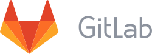
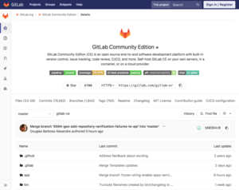

GitLab
hideThis article has multiple issues. Please help improve it or discuss these issues on the talk page. (Learn how and when to remove these template messages)
(Learn how and when to remove this template message)
|
|  | |
|  | |
Type of site | Git-repository hosting service Collaborative revision control |
|---|---|
| Available in | English |
| Headquarters | San Francisco, United States |
| Area served | Worldwide |
| Owner | GitLab Inc. |
| Founder(s) | |
| Key people | |
| Industry | Software |
| Employees | 878[3] |
| Website | gitlab |
| Alexa rank | 2,085 (October 2019[update])[1] |
| Commercial | Yes |
| Registration | Optional |
| Launched | 2011 |
| Current status | Online |
Content license |
|
| Written in | Ruby,[4] Go and Vue.js |
| Stable release | 12.4.2
/ November 5, 2019[5] |
|---|---|
| Repository | gitlab |
| Written in | Ruby |
| Operating system | Cross-platform |
| Platform | x86-64, ARMhf |
| License | Community Edition: MIT License, Enterprise Edition: Proprietary with JavaScript under MIT License[6] |
| Website | about |
GitLab is a web-based DevOps lifecycle tool that provides a Git-repository manager providing wiki, issue-tracking and CI/CD pipeline[7] features, using an open-source license, developed by GitLab Inc. The software was created by Ukrainians Dmitriy Zaporozhets and Valery Sizov,[8] and is used by several large tech companies including IBM, Sony, Jülich Research Center, NASA, Alibaba, Oracle, Invincea, O’Reilly Media, Leibniz-Rechenzentrum (LRZ), CERN,[9][10][11] European XFEL, GNOME Foundation, Boeing, Autodata, and SpaceX.[12]
The code was originally written in Ruby,[4] with some parts later rewritten in Go, initially as a source code management solution to collaborate with his team on software development. It later evolved to an integrated solution covering the software development life cycle, and then to the whole DevOps life cycle. The current technology stack includes Go, Ruby on Rails and Vue.js.
It follows an open-core development model where the core functionality is released under an open source (MIT) license while the additional functionality is under a proprietary license.
GitLab is considered as the first Ukrainian unicorn valued more than $1 billion.[13][14]
Contents
History[edit]
The product was originally named GitLab and was fully free and open-source software distributed under the MIT License.[15]
In July 2013,[16] the product was split into two distinct versions: GitLab CE: Community Edition and GitLab EE: Enterprise Edition. At that time, the license of both remained the same, being both free and open-source software distributed under the MIT License.
In February 2014, GitLab announced adoption of an open-core business model.[17] GitLab EE is set under the source-available EE License, and contains features not present in the CE version.[18] The GitLab CE licensing model remained unchanged and the company continued to develop and support CE edition. While GitLab EE changed to a restricted license, the source-code, issues and merge-requests remained publicly visible.[19]
In January 2015, GitLab released GitLab Runner continuous integration application written in Go.[20]
In March 2015, GitLab acquired Gitorious, a competing Git hosting service.[21] Gitorious had at the time around 822,000 registered users.[21] Users were encouraged to move to GitLab, and the Gitorious service was discontinued in June 2015.[21]
In July 2015, the company raised an additional $1.5 million in seed funding.[22] Customers as of 2015 included Alibaba Group, IBM, and SpaceX.[22]
In September 2015, GitLab raised $4 million in Series A funding from Khosla Ventures.[23]
In July 2016, the GitLab CEO confirmed the open-core business model of the company.[24]
In September 2016, GitLab raised $20 million in Series B funding from August Capital and others.[25]
In January 2017, a database administrator accidentally deleted the production database, in the aftermath of a cyber attack. Six hours worth of issue and merge request data was lost.[26] The recovery process was live-streamed on YouTube.[27][28]
On March 15, 2017, GitLab announced the acquisition of Gitter.[29] Included in the announcement was the stated intent that Gitter would continue as a standalone project. Additionally, GitLab announced that the code would become open-source under an MIT License no later than June 2017.[30]
In October, 2017, GitLab raised $20 million in Series C funding from GV and others.[31]
In January, 2018, GitLab acquired Gemnasium; a service that provided security scanner with alerts for known security vulnerabilities in open-source libraries of various languages.[32] The service was scheduled for complete shut-down on May 15. Gemnasium features and technology was integrated into GitLab EE and as part of CI/CD.[33]
In April 2018, GitLab announced integration with Google Kubernetes Engine (GKE) to simplify process of spinning up a new cluster to deploy applications.[34]
In May 2018, GNOME moved to GitLab with over 400 projects and 900 contributors.[35][36]
GitLab moved from Microsoft Azure to Google Cloud Platform in August 11, 2018, which made the service inaccessible to users in Crimea, Cuba, Iran, North Korea, Sudan, and Syria, due to sanctions imposed by Office of Foreign Assets Control of the United States.[37]
On September 19, 2018 GitLab raised $100 million in Series D round funding led by ICONIQ Capital.
On September 18, 2019 GitLab raised $268 million in Series E round funding led by Goldman Sachs and Iconiq Capital. For that moment the company was valued at $2.7 billion.[38][39]
Company[edit]
GitLab Inc., the company is a limited liability corporation incorporated around the GitLab project and was founded by Sytse Sijbrandij and Dmitriy Zaporozhets in 2013. GitLab Inc. is an alumnus of the Y Combinator seed accelerator programme of its Winter 2015 batch. It raised $1.5 million as seed funding.[22]
In September 2015, GitLab raised $4 million in Series A funding from Khosla Ventures. It was followed by Series B funding of $20 million by August Capital along with Khosla Ventures in September 2016.[25] In October 2017, Google Ventures joined the investors leading the Series C funding of $20 million.[31] In September 2018 GitLab raised $100 million in Series D funding led by Iconiq at $1.1 billion valuation.[40]
GitLab is a remote-only company, with its headquarters in San Francisco.[41] GitLab currently has 878[7] employees in 56 countries and regions.[3]
GitLab Application[edit]
GitLab application offers functionality to automate the entire DevOps life cycle from planning, to creation, build, verify, security testing, deploying, and monitoring offering high availability and replication, and scalability and available for using on-prem or cloud storage. Includes also a wiki, issue-tracking and CI/CD pipeline features. GitLab also offer GitLab Pages product[42][43] for creating websites with Let's encrypt support since version 12.1[44]
Acquisitions[edit]
In March 2015, GitLab acquired Gitorious, a free and open-source hosting and on-premise enterprise Git management service provider.
In March 2017, GitLab acquired Gitter, an instant messaging platform for developers and announced that it would open-source the Gitter codebase.
In January 2018, GitLab acquired Gemnasium, a company providing software and services to mitigate security vulnerabilities.
See also[edit]
References[edit]
- ^ "GitLab.com Alexa Ranking". Alexa Internet. Retrieved 27 October 2019.
- ^ "GitLab Community Edition LICENSE file".
- ^ Jump up to: a b "GitLab Team". Retrieved 23 June 2019.
- ^ Jump up to: a b Flowers, Aricka (2018-10-29). "Why we use Ruby on Rails to build GitLab". GitLab. Retrieved 2019-03-22.
- ^ "v12.4.2 · Tags · GitLab.org / GitLab FOSS". GitLab. 30 October 2019. Retrieved 23 October 2019.
- ^ "GitLab Enterprise Edition LICENSE file".
- ^ Jump up to: a b https://about.gitlab.com/features/gitlab-ci-cd/
- ^ "History of GitLab". GitLab. Retrieved 2019-09-27.
- ^ Degeler, Andrii (4 June 2014). "GitLab is building a business with 0.1% of paying customers". The Next Web.
- ^ CERN. "Services - CERN or commercial provider?". cern.ch.
- ^ "Services - GitLab".
- ^ "Y Combinator-backed GitHub competitor GitLab raises $1.5M". VentureBeat. 2015-07-09. Retrieved 2018-06-06.
- ^ "GitLab, founded by a Ukrainian citizen, raised $100 million. It became a unicorn valued at $ 1.1 billion". AIN.UA. 2018-10-30. Retrieved 2019-09-27.
- ^ "Dmitry Zaporozhets, GitLab: "I believe that GitLab can be called a Ukrainian startup"". AIN.UA. 2018-11-30. Retrieved 2019-09-27.
- ^ Olanoff, Drew (13 October 2011). "Ship it faster and cheaper - GitLab is GitHub for your own servers - The Next Web". The Next Web.
- ^ "GitLab - Announcing GitLab 6.0 Enterprise Edition". gitlab.com.
- ^ "GitLab - GitLab Enterprise Edition license change". gitlab.com.
- ^ "GitLab - Features". gitlab.com.
- ^ "GitLab.org / GitLab Enterprise Edition". GitLab. Retrieved 2018-08-01.
- ^ https://gitlab.com/gitlab-org/gitlab-runner/blob/master/CHANGELOG.md
- ^ Jump up to: a b c Degeler, Andrii (2015-03-03). "Code Collaboration Platform GitLab Acquires Rival Gitorious". The Next Web. Retrieved 2018-08-01.
- ^ Jump up to: a b c Novet, Jordan. "Y Combinator-backed GitHub competitor GitLab raises $1.5M". VentureBeat.
- ^ "GitLab Raises $4M Series A Round From Khosla Ventures". TechCrunch. Retrieved 17 Dec 2016.
- ^ "Building an Open Source Company: Interview with GitLab's CEO". GitLab. Retrieved 2018-06-06.
- ^ Jump up to: a b Miller, Ron. "GitLab secures $20 million Series B". TechCrunch. Retrieved 3 Nov 2016.
- ^ "GitLab.com Database Incident". Retrieved 1 Feb 2017.
- ^ "Gitlab Database Incident - Live Troubleshooting - YouTube". YouTube. Retrieved 2018-08-01.
- ^ Hughes, Matthew (2017-02-01). "GitLab offline after catastrophic database error loses mountains of data". The Next Web. Retrieved 2018-08-01.
- ^ "GitLab acquires software chat startup Gitter, will open-source the code". VentureBeat. 2017-03-15. Retrieved 2018-08-01.
- ^ "Gitter is joining the GitLab team". GitLab. Retrieved 2017-03-15.
- ^ Jump up to: a b "GitLab raises $20M Series C round led by GV". TechCrunch. Retrieved 2018-08-01.
- ^ "GitLab acquires Gemnasium to strengthen its security services". TechCrunch. Retrieved 2018-08-01.
- ^ Condon, Stephanie. "GitLab makes CI/CD tools available for GitHub repositories | ZDNet". ZDNet. Retrieved 2018-08-01.
- ^ https://about.gitlab.com/2018/04/05/gke-gitlab-integration/
- ^ "GNOME, welcome to GitLab!". GitLab. Retrieved 2018-06-06.
- ^ "GNOME moves to Gitlab – GNOME". www.gnome.org. Retrieved 2018-06-06.
- ^ "Update on our planned move from Azure to Google Cloud Platform". The Official Gitlab Blog. 2018-07-19. Retrieved 2018-12-18.
- ^ "Ukrainian startup GitLab raises $268 million at a valuation of $2.7 billion". AIN.UA. 2019-09-18. Retrieved 2019-09-27.
- ^ "GitLab raises $268 million at a $2.7 billion valuation". VentureBeat. 2019-09-17. Retrieved 2019-09-27.
- ^ "GitLab raises $100 million from Iconiq, GV, and Khosla, at $1.1 billion valuation". VentureBeat. 2018-09-19. Retrieved 2018-09-20.
- ^ Kamer, Jurriaan. "No Need to Come to the Office: Making Remote Work at GitLab". Hacker Noon. Retrieved 29 November 2018.
- ^ https://about.gitlab.com/product/pages/
- ^ https://www.scivision.dev/gitlab-pages-vs-github-pages/
- ^ https://about.gitlab.com/2019/07/22/gitlab-12-1-released/index.html
External links[edit]
| Wikimedia Commons has media related to GitLab. |
- Bug and issue tracking software
- Build automation
- Collaborative projects
- Continuous integration
- Cross-platform free software
- Free project management software
- Free software programmed in Ruby
- Free version control software
- Git (software)
- Go software
- Open-source software hosting facilities
- Project hosting websites
- Software using the MIT license
- Technology companies of the Netherlands
- Version control
- Y Combinator companies
![]()
{kind=link}
.png){kind=link}